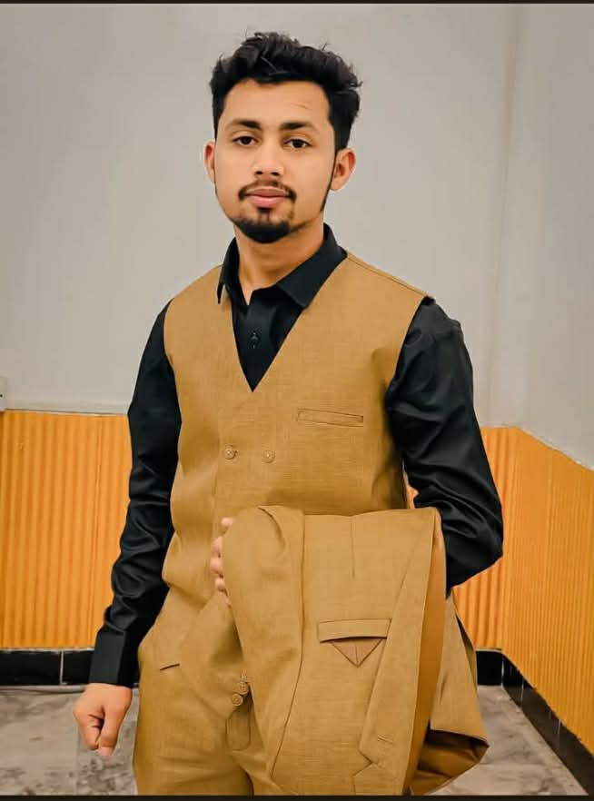

MUHAMMAD AASHIR ABBASMuhammad Aashir Abbas is a technology-focused student and digital creator with an interest in software, cybersecurity, web development, and digital design. His work combines academic learning with practical projects, including web applications and digital tools developed to explore different areas of technology.
Each project provides an opportunity to apply technical concepts in a practical environment while developing a broader understanding of modern digital technologies. This page brings together selected work, projects, and areas of interest, reflecting an ongoing journey of learning, experimentation, and practical development.
The essentials — who he is, on and off the record.
Currently in progress.
3-year diploma, completed.
Studying Cyber Security at The Islamia University of Bahawalpur has sharpened how he thinks about every project he builds — spot the weak point before it's exploited, design defensively, and never trust input blindly. Paired with a completed DAE diploma in Information Technology from Government College of Technology, that mindset shapes how he approaches everything from architecture to interface.
Eleven areas he works with and continues to learn — not mastery claims, just honest ground covered.
A dedicated space for his certifications and credentials as they're completed and added.
Six published projects, each a small, complete idea shipped end to end.
Find him online.
the person behind it.
Return to the SOC training platform